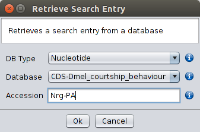

The Retrieve Search Entry option allows the user to select a given entry from a given database. It should be noted that the full name of the entry must be given, unless a gi (general identifier) number is specified. Therefore, the use of short sensible names is advised for the sequences contained in the FASTA files that are used to create BLAST-formatted databases. If the user does not remember the full name but still keeps the FASTA file used to create the database, the simplest way to remember it is by double clicking on top of the appropriate FASTA file and do a search using the Regular Expression search option (see below).

Retrieve Search Entry